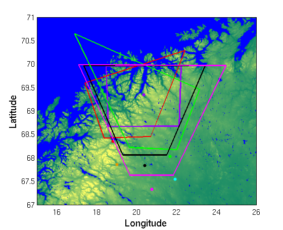

Designing an ALIS position
Contents
Looking at one thing with ALIS
In order to make good use of ALIS multi-view-point imaging it is sometimes necessary to have the cameras look at the same portion of the sky. To get as good an overlap as possible there is some tweaking involved. But we are not left alone to toil away with pen and paper (and eraser) scribbling away geometry and trigonometry. The ALIS toolbox contain a function alis_visiblevol that calculates the approximate field of view of the ALIS stations with any camera rotation at any selected altitude.
Set the options.
(As most functions will eventually) alis_visiblevol produces a struct with the default options when called with no input parameters and one output.
OPS = alis_visiblevol;
OPS.LL make the plot in Latitude-Longitude when 1. Otherwise the plot will be in km relative Kiruna.
OPS.LL = 1;
OPS.linewidth is the linewidth of the plot. If it is kept at its default value (1) it looks a little bit skinny in plots with the background map.
OPS.linewidth = 2; OP = OPS;
Here we remove the field clrs - most stations have a designated color and then it is unnecessary to include this.
OP = rmfield(OP,'clrs');
Background map
This is a good thing to include, it helps the eye when it comes to judging the field-of-view and comparing it to possible satellite passes.
clf PH = nscand_map('l'); axis([15 26 67 71]) set(gca,'fontsize',12) xlabel('Longitude','fontsize',16) ylabel('Latitude','fontsize',16) hold on

The common volume
as seen by the ALIS stations. The input parameters and working of alis_visible_vol are well explained by the help of the function:
help alis_visiblevol
ALIS_VISIBLEVOL - Calculates the field of view from an ALIS \ | /
station with a slightly simplified optical transfer \ | /
function. \|/
Calling:
hndl = alis_visiblevol(stnr,azim,zenit,alt,camfov,edge,OPS);
INPUTPARAMETERS - STNR is the station number 1-6 currently.
AZIM is the azimuthal angle of the camera rotation
in degrees.
ZENIT is the zenith angle of the rotation, degrees.
ALT is the altitude to plot the field of view on.
CAMFOV is the camera field-of-view,
side-to-side (degrees)
EDGE 1 for plotting the edges of the field of view cone
OPS struct with field 'clrs' control the colour
used in plotting
AIDA_VISIBLEVOL - Calculates the field of view from an ALIS \ | /
station with a slightly simplified optical transfer \ | /
function. \|/
Calling:
hndl = aida_visiblevol(stnr,azim,zenit,alt,camfov,edge,OPS);
Input:
STN_POS - the station position either as Latitude-Longitude
(deg) pairs or as horizontal X,Y,Z (km) coordinates.
AZIM - the azimuthal angle of the camera rotation in degrees.
ZENIT - the zenith angle of the rotation, degrees.
ALT - the altitude to plot the field of view on.
CAMFOV - the camera field-of-view, side-to-side (degrees)
EDGE - 1 for plotting the edges of the field of view cone
OPS - options struct with field 'clrs' control the colour
used in plotting
Output:
HNDL - handle-graphics handle to field-of-view lines
Stations are given by the "depreciated" numbers:
- 1 - Kiruna
- 2 - Merasjarvi
- 3 - Silkkimuotka
- 4 - Tjautjas
- 5 - Abisko
- 6 - Nikkaluokta
- 10 - Skibotn
- 11 - Ramfjordmoen (EISCAT)
OPS.clrs = [0 0 0]; h3 = alis_visiblevol(3,340, 40,100,60,0,OP); h4 = alis_visiblevol(4,0, 45,100,60,0,OP); h5 = alis_visiblevol(5,20, 35,100,60,0,OP); axis([15 26 67 71])

Set the color of station 10 (Skibotn) to deep purple
OPS.clrs = [.6 0 1]; h10 = alis_visiblevol(10,180,0,100,90,0,OPS); axis([15 26 67 71])

And Kiruna to black
OPS.clrs = [0 0 0]; h1 = alis_visiblevol(1,0, 41,100,60,0,OPS); axis([15 26 67 71])
Set the color of station number 11 (Ramfjord) to orange
OPS.clrs = [.9 .6 0];
And call the function with a field-of-view of 1 degree. Roughly corresponding of EISCAT UHF
h10 = alis_visiblevol(11,0,0,1,90,0,OPS); axis([15 26 67 71]) set(gca,'fontsize',12) xlabel('Longitude','fontsize',16) ylabel('Latitude','fontsize',16)

Finalized common field-of-view
The final fields-of-view overlap well. It might take some tweaking and adjustments before a good enough overlap is obtained. But in al with this script as basis it should not take more than a few 10s of minutes - at the most.